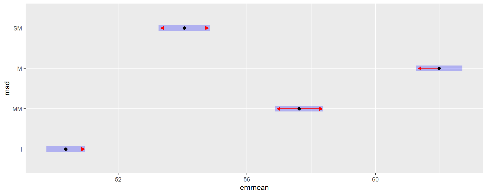
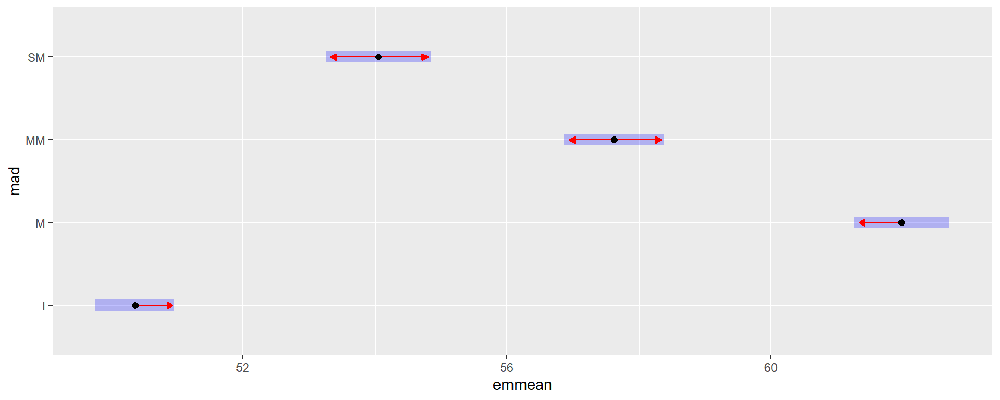
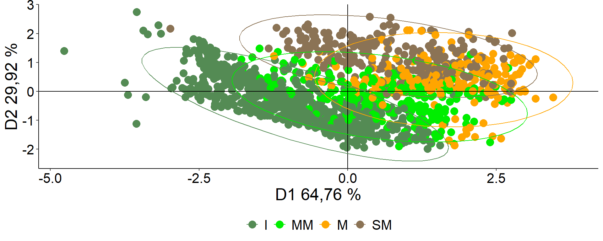
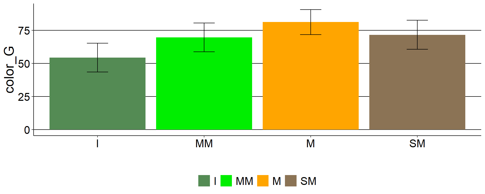
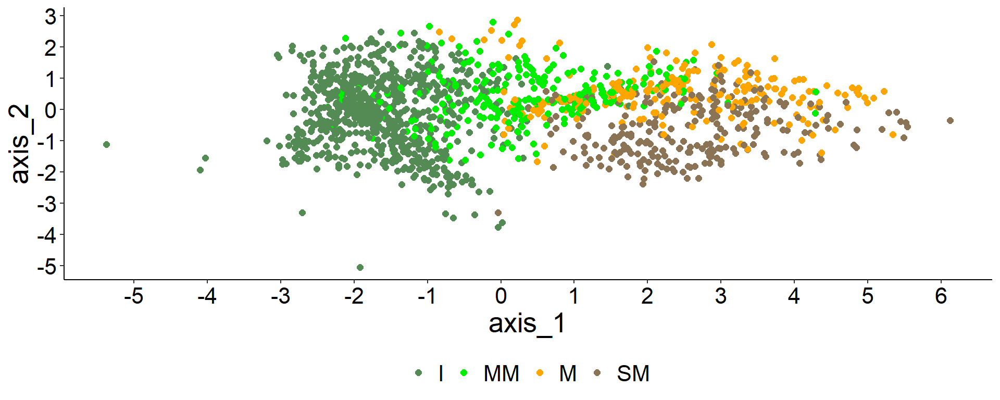

Colorimetry
## <environment: 0x0000013e1f326b00>Colorimetry quantified in 4 states of ripeness: Immature (I), Medium Ripe (MM), Ripe (M), Overripe (SM).
In 3 populations of Entre Rios: Concordia, PN El Palmar, and Gualeguaychú.
CieLab scale: color_L: luminosity +a: red -a: green +b: yellow -b: blue
3NH NH300 digital colorimeter.
Descriptive statistics.
## site mad N color_L sd se ci
## 1 concordia I 306 55.70627 7.331983 0.4191416 0.8247752
## 2 concordia MM 84 61.31595 5.053207 0.5513501 1.0966131
## 3 concordia M 102 64.95804 4.488316 0.4444095 0.8815888
## 4 concordia SM 106 55.32736 6.776779 0.6582189 1.3051266
## 5 palmar I 72 49.26389 7.607176 0.8965142 1.7875986
## 6 palmar MM 80 56.03475 5.200154 0.5813949 1.1572375
## 7 palmar M 72 58.81667 4.848187 0.5713643 1.1392681
## 8 palmar SM 130 52.71785 5.884998 0.5161485 1.0212124
## 9 gualeguaychu I 388 46.34812 7.061905 0.3585139 0.7048788
## 10 gualeguaychu MM 104 55.85625 6.767078 0.6635665 1.3160277
## 11 gualeguaychu M 52 60.52885 5.385343 0.7468128 1.4992892
## 12 gualeguaychu SM 12 57.17667 4.928305 1.4226790 3.1312955## site mad N color_a sd se ci
## 1 concordia I 306 -6.159771 4.805075 0.2746878 0.5405231
## 2 concordia MM 84 1.219048 6.096628 0.6651966 1.3230493
## 3 concordia M 102 13.291078 8.108201 0.8028315 1.5926018
## 4 concordia SM 106 16.553585 3.776475 0.3668037 0.7273040
## 5 palmar I 72 -2.531667 6.363430 0.7499374 1.4953328
## 6 palmar MM 80 5.071250 5.570229 0.6227706 1.2395938
## 7 palmar M 72 12.211250 5.950883 0.7013183 1.3983891
## 8 palmar SM 130 18.040538 5.757659 0.5049801 0.9991155
## 9 gualeguaychu I 388 -3.955670 6.205523 0.3150377 0.6193996
## 10 gualeguaychu MM 104 2.273750 6.134840 0.6015706 1.1930733
## 11 gualeguaychu M 52 10.947692 5.677261 0.7872944 1.5805596
## 12 gualeguaychu SM 12 12.724167 6.429948 1.8561660 4.0853938## site mad N color_b sd se ci
## 1 concordia I 306 38.90843 9.216657 0.5268812 1.0367823
## 2 concordia MM 84 51.07631 8.644406 0.9431821 1.8759512
## 3 concordia M 102 57.98422 5.942601 0.5884052 1.1672376
## 4 concordia SM 106 46.67236 9.816968 0.9535083 1.8906307
## 5 palmar I 72 33.68236 10.770910 1.2693639 2.5310398
## 6 palmar MM 80 42.26034 10.623029 1.1876907 2.3640393
## 7 palmar M 72 48.77736 8.063662 0.9503117 1.8948678
## 8 palmar SM 130 43.39446 10.224225 0.8967239 1.7741901
## 9 gualeguaychu I 388 29.73510 9.220129 0.4680811 0.9203003
## 10 gualeguaychu MM 104 43.43865 10.368238 1.0166894 2.0163636
## 11 gualeguaychu M 52 52.05827 8.931949 1.2386384 2.4866704
## 12 gualeguaychu SM 12 47.32083 9.531829 2.7516021 6.0562355Bar plots

Density (frequency) of values found for the 4 maturity states with
average.
 Table of average color by maturity.
Table of average color by maturity.
## Lmu.mad Lmu.grp.mean amu.grp.mean bmu.grp.mean
## 1 I 50.36056 -4.702311 33.77067
## 2 MM 57.62078 2.778246 45.48081
## 3 M 61.98239 12.407876 53.68757
## 4 SM 54.04895 17.147742 44.98548Density (frequency) of values found for the 4 maturity states with Line of highest frequency.
 Table of most frequent color by maturity.
Table of most frequent color by maturity.
## Lcm acm bcm
## 1 51.37369 -8.7950137 38.00813
## 2 57.55477 0.9702936 48.97375
## 3 63.54434 11.0373012 57.95549
## 4 49.68287 14.6332245 39.53696Color palette.

color_a caption
IP: Average immature, IF: Most frequent immature, MMP: Average medium mature, MMF: Most frequent medium mature, MP: Average mature, MF: Most frequent mature, SMP: Average overripe, SMF: Most frequent overripe.
Inferential statistics: maturity states.
color_L
## Denom. DF: 1504
## numDF F-value p-value
## (Intercept) 1 94763.86 <.0001
## mad 3 211.29 <.0001
color_a
## Denom. DF: 1504
## numDF F-value p-value
## (Intercept) 1 390.2274 <.0001
## mad 3 1200.6841 <.0001
color_b
## Denom. DF: 1504
## numDF F-value p-value
## (Intercept) 1 26212.21 <.0001
## mad 3 322.90 <.0001
Conclusion
Significant differences were found for all maturity states in the three scales color_L, a, and b. Only in the b scale, there is no difference between MM and SM.
Inferential statistics: populations.
color_L
## Linear mixed model fit by REML ['lmerMod']
## Formula: color_L ~ 1 + (1 | site/phenotype/id)
## Data: data
##
## REML criterion at convergence: 9954.4
##
## Scaled residuals:
## Min 1Q Median 3Q Max
## -3.7816 -0.4084 0.0426 0.4553 2.1663
##
## Random effects:
## Groups Name Variance Std.Dev.
## id:(phenotype:site) (Intercept) 31.79 5.639
## phenotype:site (Intercept) 11.53 3.396
## site (Intercept) 15.62 3.952
## Residual 17.07 4.132
## Number of obs: 1508, groups: id:(phenotype:site), 995; phenotype:site, 52; site, 3
##
## Fixed effects:
## Estimate Std. Error t value
## (Intercept) 54.096 2.342 23.1color_a
## Linear mixed model fit by REML ['lmerMod']
## Formula: color_a ~ 1 + (1 | site/phenotype/id)
## Data: data
##
## REML criterion at convergence: 10261.1
##
## Scaled residuals:
## Min 1Q Median 3Q Max
## -2.76318 -0.35132 -0.04838 0.37788 3.05568
##
## Random effects:
## Groups Name Variance Std.Dev.
## id:(phenotype:site) (Intercept) 55.63 7.458
## phenotype:site (Intercept) 27.86 5.278
## site (Intercept) 33.74 5.809
## Residual 13.84 3.721
## Number of obs: 1508, groups: id:(phenotype:site), 995; phenotype:site, 52; site, 3
##
## Fixed effects:
## Estimate Std. Error t value
## (Intercept) 3.088 3.446 0.896color_b
## Linear mixed model fit by REML ['lmerMod']
## Formula: color_b ~ 1 + (1 | site/phenotype/id)
## Data: data
##
## REML criterion at convergence: 11166.3
##
## Scaled residuals:
## Min 1Q Median 3Q Max
## -4.1762 -0.4497 0.0220 0.4708 3.4427
##
## Random effects:
## Groups Name Variance Std.Dev.
## id:(phenotype:site) (Intercept) 57.04 7.553
## phenotype:site (Intercept) 32.33 5.686
## site (Intercept) 26.19 5.118
## Residual 44.95 6.704
## Number of obs: 1508, groups: id:(phenotype:site), 995; phenotype:site, 52; site, 3
##
## Fixed effects:
## Estimate Std. Error t value
## (Intercept) 40.883 3.077 13.29
## optimizer (nloptwrap) convergence code: 0 (OK)
## Model failed to converge with max|grad| = 0.00482898 (tol = 0.002, component 1)Signification
## Data: data
## Models:
## L23: color_L ~ 1 + (1 | site)
## L2: color_L ~ 1 + (1 | site/phenotype/id)
## npar AIC BIC logLik deviance Chisq Df Pr(>Chisq)
## L23 3 10479.2 10495.1 -5236.6 10473.2
## L2 5 9967.7 9994.3 -4978.9 9957.7 515.44 2 < 2.2e-16 ***
## ---
## Signif. codes: 0 '***' 0.001 '**' 0.01 '*' 0.05 '.' 0.1 ' ' 1## df AIC
## L2 5 9964.411
## L23 3 10475.799## Data: data
## Models:
## a23: color_a ~ 1 + (1 | site)
## a2: color_a ~ 1 + (1 | site/phenotype/id)
## npar AIC BIC logLik deviance Chisq Df Pr(>Chisq)
## a23 3 11170 11186 -5582.0 11164
## a2 5 10275 10302 -5132.6 10265 898.75 2 < 2.2e-16 ***
## ---
## Signif. codes: 0 '***' 0.001 '**' 0.01 '*' 0.05 '.' 0.1 ' ' 1## df AIC
## a2 5 10271.09
## a23 3 11166.00## Data: data
## Models:
## b23: color_a ~ 1 + (1 | site)
## b2: color_b ~ 1 + (1 | site/phenotype/id)
## npar AIC BIC logLik deviance Chisq Df Pr(>Chisq)
## b23 3 11170 11186 -5582.0 11164
## b2 5 11180 11207 -5585.1 11170 0 2 1## df AIC
## b2 5 11176.3
## b23 3 11166.0Intraclass correlation coefficients (ICC)
Residual variance over total variance.
Principal component analysis

Univariate analysis for the color component Lab
Descriptive table for principal color component
| mad | N | color_G | sd | se | ci |
|---|---|---|---|---|---|
| I | 766 | 54.41176 | 10.908787 | 0.3941505 | 0.7737449 |
| MM | 268 | 69.59369 | 10.865516 | 0.6637170 | 1.3067849 |
| M | 226 | 81.20140 | 9.467084 | 0.6297411 | 1.2409447 |
| SM | 248 | 71.64590 | 10.924151 | 0.6936843 | 1.3662908 |
Higher values indicate more advanced stages of maturation
Descriptive graphic (sd)

The model
## gls(model = (color_G) ~ mad, data = data_color_G, weights = varIdent(form = ~1 |
## mad))Assumptions check
##
## Shapiro-Wilk normality test
##
## data: e
## W = 0.99518, p-value = 9.189e-05Anova (comparison of means)
| numDF | F-value | p-value | |
|---|---|---|---|
| (Intercept) | 1 | 55823.4665 | 0 |
| mad | 3 | 507.5049 | 0 |
Tukey test
## $emmeans
## mad emmean SE df lower.CL upper.CL
## I 54.41176 0.3941528 736.36 53.63796 55.18555
## MM 69.59369 0.6637083 231.91 68.28602 70.90136
## M 81.20140 0.6297373 222.65 79.96040 82.44241
## SM 71.64590 0.6936856 248.03 70.27964 73.01217
##
## Degrees-of-freedom method: satterthwaite
## Results are given on the ( (not the response) scale.
## Confidence level used: 0.95
##
## $contrasts
## contrast estimate SE df t.ratio p.value
## I - MM -15.181937 0.7719230 419.39 -19.668 <.0001
## I - M -26.789648 0.7429169 410.62 -36.060 <.0001
## I - SM -17.234146 0.7978447 419.00 -21.601 <.0001
## MM - M -11.607711 0.9149195 465.02 -12.687 <.0001
## MM - SM -2.052209 0.9600564 479.96 -2.138 0.1428
## M - SM 9.555502 0.9368931 469.82 10.199 <.0001
##
## Note: contrasts are still on the ( scale
## Degrees-of-freedom method: satterthwaite
## P value adjustment: tukey method for comparing a family of 4 estimates # Color correlation
# Color correlation
Discriminant Analysis

